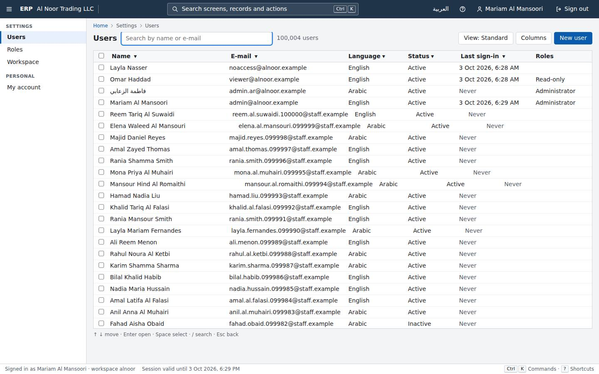
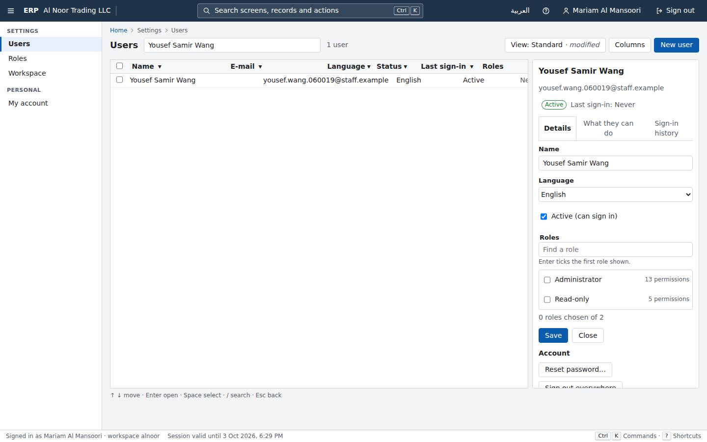
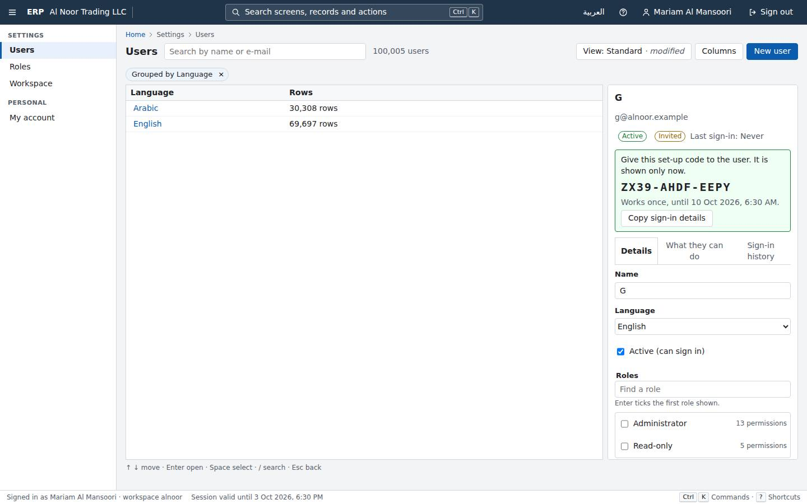
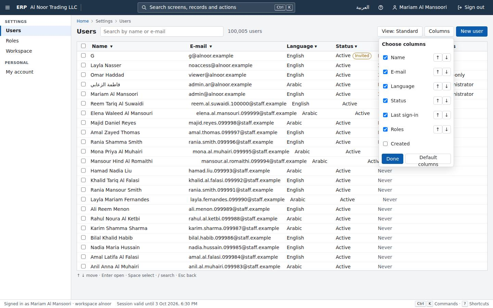
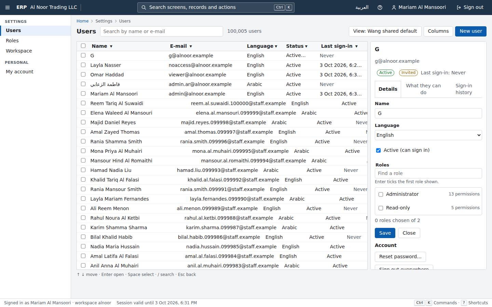
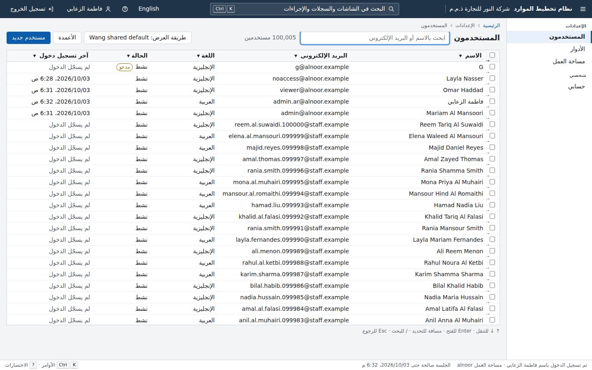
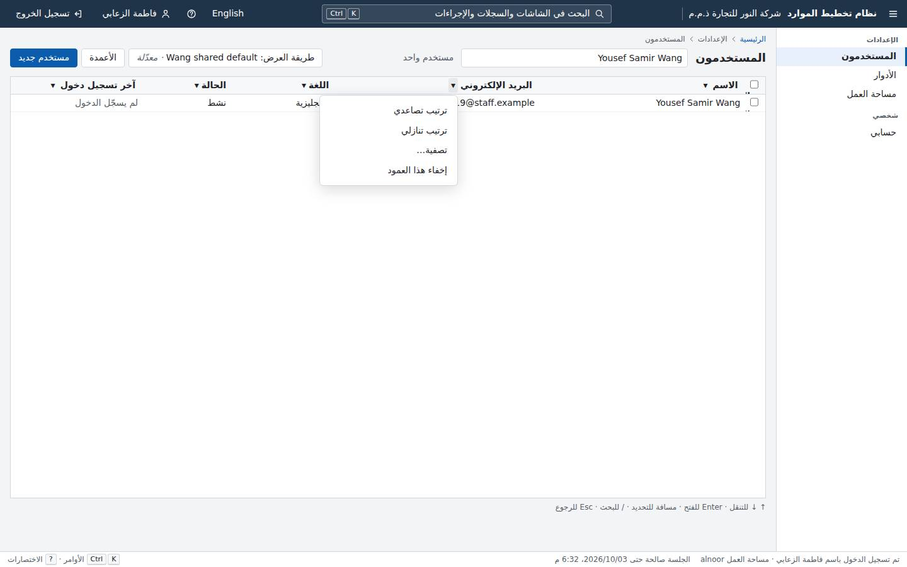
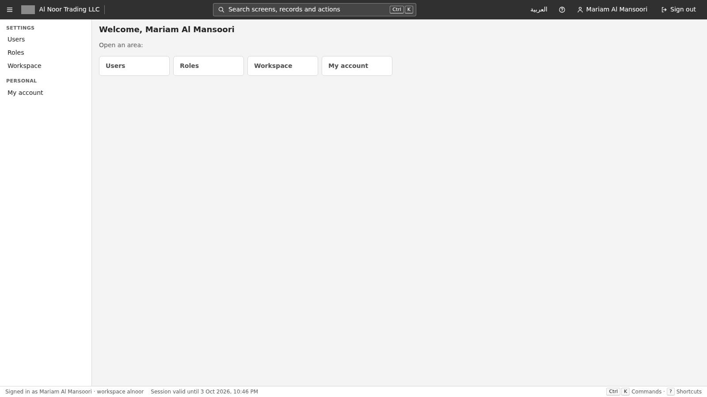

Gauntlet progress
Platform core, judged piece by piece against the owner's bar and Odoo Community. Rebuilt from gauntlet/verdicts/ by gauntlet/tools/record.mjs. Full evidence in ledger.md; owner items in needs-human.md.
Foundation and hard gates
Wave 0 · 4 rounds judgedThe isolation gate has three layers: a source scan (it counts literal set_config/app.tenant_id uses per reviewed file), a SQL trace (it judges which class sends a setting statement) and a black-box attack (it sends tenant B values in inputs that were recorded or guessed). None of them compares the tenant actually bound, meaning the @tenant parameter of set_config or erp.current_tenant_id() after the statement, with the signed-in principal's tenant. So a rebind written inside ErpDbSession passes the source and trace layers by construction. It is caught only if the attack sends the triggering input by name. Here the input was a header read by enumeration, which RequestInputRecorder does not record, so all 88 gate tests and all 206 other .NET tests passed while tenant A could read tenant B's workspace and users. Round 2 asked for exactly this check: every statement inside an authenticated request must run with current_tenant_id() equal to the principal's tenant. It is still not enforced on values. Every later module (contacts, documents, imports, jobs) depends on this one guarantee. Suggested fixes: (1) In SqlTrace, judge every set_config('app.tenant_id', ...) by its parameter value against the request principal's tenant claim. Or append a check after each request statement, or read the bound tenant from the connection at commit. Fail on any mismatch. (2) Make RequestInputRecorder record header, query and cookie enumeration and treat any enumeration as 'reads every name'. Or send B's tenant id in arbitrary unknown header names. (3) Add T1d as a gate self-test plant.
- G3 clean clone: ./erp verify (build, migrate, seed, all tests) PASS — Fresh git clone at bf32c91. Ran ERP_PROJECT=c-p00-foundation-r4 ERP_HTTP_PORT=20050 ERP_DB_PORT=20051 ERP_VERIFY_HTTP_PORT=20060 ERP_VERIFY_DB_PORT=20061 ./erp verify: rc=0 in 1210 s, on a shared machine at load 9-20 (verify.log). Results: 298 .NET, 121 web unit, 46 Playwright e2e and 146 compare-harness tests passed; 0 failed, 0 skipped. Ratchet check passed. Round 3's gap (bulk seed timeout) did not come back: the 3 users volume tests passed in their own timing step.
- G3 clean clone: ./erp up (running seeded demo) PASS — ./erp up from the same clone with the ERP_PROJECT/ERP_HTTP_PORT/ERP_DB_PORT overrides: rc=0 in 60 s (up.log). The database holds 100,004 alnoor users and 1,004 gulfsteel users, served on :20050.
- G1 tenant isolation (product as built) PASS — All 27 G1 gate tests passed inside verify. My own attack also found no leak. Over HTTP (attack/http_attack.py, http_attack.out) I signed in as tenant A with cookie and bearer and sent 2,828 requests: 205 tenant B ids in every route, 8 tenant-switch headers, query and body fields. Result: 0 tenant B markers, and B's rows were unchanged. Targeted writes (attack/write_attack.out): PUT, DELETE, copy, password, unblock, revoke, access and sign-ins on B's user and role with valid bodies, and GET/PUT/DELETE on B's shared view. All returned 404, and B's records were unchanged afterwards. As erp_app in the database (attack/db-attack-app-role.txt): not superuser, no BYPASSRLS, member of nothing. With no tenant bound it reads 0 rows; a session-level set_config is ignored; bound to A it sees 0 B rows; UPDATE of B rows touches 0; an INSERT with B's tenant_id is refused by RLS; SET ROLE to erp_owner or erp_auth is denied; it cannot ALTER the table; it reads 0 credentials. verify_sign_in returns only an algorithm and salt challenge. No export, job or file surfaces exist yet.
- G1 gate catches planted tenant leaks in the kernel (p00 surface) FAIL — T1d (plant-T1d-support-rebind-enumerated.diff) MISSED. The plant moves ErpDbSession's reviewed set_config command into a private ApplyAsync. After the session resolves, UnitOfWorkFilter calls ErpDbSession.SupportWorkspaceAsync, which loops over Request.Headers looking for 'Erp-Support-Workspace' and rebinds both the RLS tenant and the EF filter tenant to that value. I confirmed a real leak in a running stack built from the plant (plant-T1d-live.txt): tenant A's viewer, sending that header with gulfsteel's id, got 200 with gulfsteel's tenant record and its users. Yet the whole gate suite passed, 88/88 (plant-T1d.log), and so did Kernel, Identity, Lists and Tenancy, 206/206 (plant-T1d-other-suites.log). Why nothing caught it: the source gate counts set_config literals per file, and the refactor kept the count. The SQL trace judges only which class sends a setting statement, never which tenant it sets. The input recorder logs indexer, TryGetValue and ContainsKey reads but not enumeration, so the attack never tries that header. Non-interference and process-state checks do not look at binding. Other plants were caught. T1c (same rebind, header read with TryGetValue) was caught only by the HTTP canary scan: 5 leaks, while the trace judged its 98,396 setting statements as fine (plant-T1c.log). T2 (process-wide answer cache in UnitOfWorkFilter kept in AppContext data) was caught by the HTTP attack, 113 leaks (plant-T2.log). The process-state inventory missed T2, and non-interference failed only through its ratchet minimum (14 discriminating < 40), with 0 unstable comparisons. T1 (header swap of the set_config parameter only) fails closed: session lookup gives 401 and the EF filter blocks it (plant-T1-live.txt), so it is not a leak.
- G2 permissions (product as built) PASS — All G2 tests passed inside verify. In the browser, noaccess@ gets 'No access' at /identity/users (05-noaccess-en.jpg). By API, noaccess is denied.
- G2 gate catches planted permission faults in the kernel (p00 surface) PASS — plant-P1P2-permissions.diff, caught by 4 G2 tests (plant-P1P2.log, 17/21 passed). P1: PrincipalExtensions.HasPermission treats *.update as granting *.delete. Caught by grant-exactly-one: identity.users.update opened DELETE /api/identity/users/{id} and identity.roles.update opened DELETE roles. P2: a new kernel endpoint POST /api/platform/cache/clear carries RequiresPermissionAttribute metadata but enforces only RequireAuthorization(). Caught by the no-roles and grant-exactly-one tests (204 where 403 was expected).
- Reviewed exceptions added at merge 1142805 PASS — read-permission-writes.txt (6 personal saved-view writes): legitimate. ViewEndpoints filters personal reads and writes by IsShared == false and OwnerUserId == caller. Shared views need lists.views.share. A tenant B shared view returned 404 to tenant A on GET, PUT and DELETE. tenant-bypass-sources.txt set-config in IdentitySql.cs (now counted at 6): legitimate. verify_sign_in returns at once if a tenant is already bound, binds each account's own tenant only for its sign-in-attempt insert, and unbinds before returning.
- Rule gates (licence, float money, EN/AR strings, audit, OpenAPI, ratchet) PASS — Every rule test passed in verify. String check: 365 keys in English and Arabic, 36 plural messages. Ratchet check passed. In the database (db-inspect.txt): no real, double or money columns. Every tenant table has RLS enabled and forced and tenant_id NOT NULL. Business tables carry the audit trigger; my API writes left field-level audit rows with actor, kind and tenant. OpenAPI lists 44 operations.
611 / 611 passed
0 failed · 0 skipped · 1210s
Clean clone → demo: PASS in 1210s
| Task | Ours | Odoo | Winner |
|---|---|---|---|
| sign-in | 2 · 21 · 0.363s · 7.63s | 4 · 57 · 2.142s · 19.06s | ours |


Round 4 · judged 2026-10-04T01:06:43Z · commit bf32c91143
Odoo reference rig and blind comparison harness
Wave 0 · 4 rounds judgedRound 4 closed the browser side: fresh start context, page script refused, start state checked. The Node process the drivers run in is still open in three ways. (1) Network: installNetworkGuard patches only globalThis.fetch and http/https.request, and only on the first execute(). run.mjs loads every driver before that, so a fetch captured when the module loads is the raw one. process.getBuiltinModule('node:child_process' | 'node:net' | 'node:worker_threads') reaches the back end with no patch at all. The driver lint does not forbid getBuiltinModule or a captured fetch. (2) Timer: verify() runs after the clock stops, with the page's default timeout back at 120 s, and Locator.waitFor is allowed while verifying. A driver can return from run() right after its last click and let verify() wait for the end state for free. The README promises machine seconds run 'to the verified end state on screen', but nothing enforces it. (3) Paste: the PASTE regex misses Playwright's 'ControlOrMeta+v'. The copy-before-paste rule accepts any copy chord, even one with nothing selected, so set-up's clipboard is still pasted. Fixes: install the network guard before any driver loads. Forbid process.getBuiltinModule, process.binding and global captures of fetch in the lint, and refuse them at run time (wrap process.getBuiltinModule, or run drivers in a worker or vm with no process). Make verify() a single read with a short timeout, and require the end state to be on screen when run() returns: check it right at finish(), or let verify poll at most once. Normalise chords (ControlOrMeta, case, order) before matching paste. Require that the pasted text was selected and copied inside the measured part, for example by tracking the copied selection's text. Add each of my plants as a self-test.
- G1 tenant isolation (product as built) PASS — Every G1 test passed in ./erp verify. My HTTP attack (attack/http-attack.mjs, http-attack.out) ran as the alnoor admin against gulfsteel. It covered all 44 documented operations: 1,321 requests using B's 50 user ids, role ids, tenant id and code, e-mails and a fresh canary. These went into routes, search, tenantId and filter ('id in (...)') parameters, and six tenant-switch header and cookie variants. Every PUT, POST and DELETE on B's ids was tried, and so was a POST of a user carrying B's role ids. Result: 0 of 105 markers appeared in any body or header, no write on a B id was accepted, and B's users and tenant were unchanged. As erp_app (attack/db-attack-app-role.txt): unbound, 0 users and 0 tenants. With the GUC set but no transaction marker, 0 rows. Bound to A, only A's 100,004 users were visible. UPDATE on B's rows changed 0 rows. INSERT into B was refused by RLS. DISABLE RLS was refused (not owner). SET ROLE erp_owner and SET ROLE erp_auth were denied. All 9 tenant tables have RLS enabled and forced. No exports, jobs or file paths exist yet.
- Instrument integrity: the harness catches faults planted in the measuring instrument (this piece's surface) FAIL — Five stand-in plants were all MISSED (plants/zz-critic-r5.test.mjs, plants/critic-r5-plants.log). Control: the honest path ran 3 steps, 10 keys, 2.175 s against a 2 s server answer. T2 (wrong timer): run() returns after the click, and verify() waits for the end state with Locator.waitFor (allowed in verifying, 120 s timeout). Result 'verified' at 0.107 s machine and 0 s wait. U4 (uncounted action): a fetch captured when the module loads acts during the measured part. run.mjs loads drivers before the first execute() installs the network guard. Result 'verified' at 1 step instead of doing the work. U5: process.getBuiltinModule('node:child_process') runs curl against the back end while measured. It passes both the runtime guard (only fetch/http/https are patched) and the driver lint. Result 'verified', 1 step. C2: text copied in set-up and pasted with 'ControlOrMeta+v', which the PASTE regex does not match: 10 characters for 2 keys. C3: an empty Control+c inside the measured part satisfies the copy-before-paste rule, then Control+v pastes set-up's clipboard: 10 characters for 4 keys. Both paste plants ended 'verified'. Two plants in real ours drivers also stayed 'verified' against my demo (plants/real-driver-plants-run.log). U5 in api-update-user (plants/plant-U5-api-update-user-child-process.diff) sends the PUT through a child process: 1 step, 56 keys, 0.126 s, human 17.43 s. That beats Odoo's 2 / 184 / 0.733 / 54.62 on every metric, so the recorded LOSS becomes a WIN. T2 in create-restricted-user (plants/plant-T2-...diff) drops the save wait: 0.58 s against an honest 0.91-1.41 s. With both real-driver plants applied, the harness suite stayed green: 146/146, lint included (plants/npm-test-with-real-driver-plants.log). The round-3 start-state plant H2, replayed on find-user, is still caught: the run ends in error, never a win (plants/r3-H2-replay.log).
- G2 permissions (product as built) PASS — Every G2 test passed in ./erp verify: undeclared endpoints fall back to deny; a user with no roles is denied everything and sees no menu; one permission opens exactly its endpoints; no grant beyond the caller's own; writes may not declare read permissions. p01 adds no product endpoint.
- G3 clean clone PASS — Run from a fresh clone at 09d6d2c with ERP_PROJECT=c-p01-odoo-rig-r5 and ports 20150/20151/20160/20161. `./erp verify` returned rc=0 in 1889 s: 583 tests passed and the ratchet passed (verify.log). `./erp up` returned rc=0 in 64 s (up.log). With ERP_SEED_USERS_CSV set, `./erp up` returned rc=0 in 74 s with 100,004 users (up-shared-dataset.log). The private Odoo rig (ODOO_REF_PROJECT=c-p01-odoo-rig-r5-odoo, ODOO_REF_PORT=20152) came up from empty volumes with rc=0 in 254 s. Every main list reached 100,000 or more and Arabic was active. A second run took 13 s with +0 in every step (rig-up-first.log, rig-up-second.log, rig-volume.json). Port and project overrides work as documented.
- Rule gates (licence, float money, EN/AR strings, audit, OpenAPI, ratchet) PASS — All pass in ./erp verify. Ratchet minimums are met and no count fell. dotnet 273 (round 3: 245), web 119 (89), e2e 45 (31), compare 146 (115). The built-ours-driver health check verified all six built drivers. The harness's only dependency is playwright-core 1.56.1 (Apache-2.0, pinned).
583 / 583 passed
0 failed · 0 skipped · 1889s
Clean clone → demo: PASS in 1889s
| Task | Ours | Odoo | Winner |
|---|---|---|---|
| sign-in (p00) | 2 · 21 · 0.359s · 7.63s | 4 · 57 · 2.001s · 19.06s | ours |
| find-user (p03) | 4 · 20 · 0.619s · 14.35s | 6 · 21 · 2.828s · 13.2s | odoo |
| api-update-user (p15) | 2 · 243 · 0.389s · 71.14s | 2 · 184 · 0.733s · 54.62s | odoo |
| switch-to-arabic (p04) | 1 · 0 · 0.085s · 2.65s | 6 · 1 · 3.061s · 15.28s | ours |
| create-restricted-user (named; p03) | 5 · 35 · 1.373s · 21.65s | 10 · 46 · 10.079s · 28.7s | ours |
| reach-screen-keyboard (p04) | 2 · 3 · 0.188s · 3.15s | 3 · 8 · 1.074s · 3.99s | ours |
| find-record, custom-field-filter, import-5000, follow-approval, switch-company, add-rate, arabic-report, attach-file, configure-sequence, create-company-branch, edit-and-save, export-filtered-list, keyboard-navigation, see-and-rerun-job, who-changed-field | – | – | not-compared |


Round 5 · judged 2026-10-04T00:12:24Z · commit 09d6d2c7dd
Tenants, companies and branches
Wave 1 · 0 rounds judgedWaiting for its first critic.
Users, roles and permissions
Wave 1 · 3 rounds judgedG2AccountTakeoverTests, GrantBearingRecords and the screens-hide matrix always use the strongest record as the target: the Administrator, or a role holding the whole catalogue. Every caller they build holds only identity permissions. A check that compares only part of the target's grants therefore still answers 403 against the Administrator, and every gate passes. Plants P14 and P16 make UserAccess and the role grant checks compare identity.* permissions only. Result: a helpdesk clerk with users.update and resetPassword takes over the 'Workspace manager' (tenancy permissions). The clerk sets the manager's password, moves their sign-in, mints a role granting tenancy.tenant.update, and empties the manager's role. All 303 .NET tests and all 146 web tests stay green. Once Contacts, Purchasing and Accounting land, most strong accounts in a UAE trading company will hold non-identity permissions: the finance manager, the purchasing approver. This class of fault is exactly the one that lets a junior administrator take them over. Fix: - Aim every acting-on-a-user and acting-on-a-role probe at targets whose grants are disjoint from the caller's and only partly overlap them. Include one grant from every module in the catalogue, not only the Administrator, and include a test module the way ModulePermissionsTests does. - Add P14/P16 as gate self-tests. - Add a non-identity permission to the screens test catalogue and its stronger-user case (U2). - Separately, extend G1WriteOracle to name fields (L7): a role created by B, then A's same-name create, must answer like an unused name.
- G1 tenant isolation of the product as built PASS — My own attacks found no leak. As alnoor's admin I made 24 API calls against gulfsteel's admin, a second B user, the B Administrator role and the B Read-only role. They covered GET, PUT (including an e-mail move), password, unblock, revoke, DELETE, role PUT/DELETE/copy, create-with-B-role, search and filter by B values, a tenant query parameter and tenant headers. Every call by id answered 404, searches returned nothing of B's, B's records read back unchanged, and B's admin still signed in. I also hit B's private and shared saved views 12 ways: all 404 (attacks/attack-a-vs-b.txt). As erp_app: 0 rows with no tenant bound. Bound to A, 0 of B's rows and UPDATE 0. An insert into B was refused by RLS. A session-level or forged app.tenant_tx tenant was ignored. Credentials and sign_in_secret were denied, SET ROLE was refused, and RLS could not be disabled (attacks/db-app-role.txt). No export, job or file endpoints exist yet.
- G1 gate catches a tenant leak planted in this piece's surface FAIL — Plant L7 (plants/L7-role-name-registry.diff) keeps a role-name registry outside the tenant's rows, so POST /api/identity/roles and /roles/{id}/copy answer 409 identity.roleNameTaken for a name another workspace uses. With it in place all 93 gate tests pass (plants/plant-L7-gates.log) and so do all 74 identity tests (plant-L7-identity-tests.log). Proof (plants/CriticRoleNameOracleProof.cs, plant-L7-proof.log): tenant B creates 'JAFZA payroll …', then tenant A gets 409 for that name and 201 for an unused one. Without the plant both answer 201 (proofs-unplanted-control.log). G1WriteOracle judges only e-mail and code fields, so name fields are never checked for write oracles.
- G2 permissions of the product (restricted roles, escalation) PASS — No escalation was found in the shipped product. The Read-only user gets no New user or New role, the user panel shows only Details, What they can do and Close, the role matrix has 0 enabled checkboxes, and POST /api/identity/roles from that browser answers 403 (browser-walk.txt, screenshot 04). Unplanted, a helpdesk clerk gets 403 on all five partial-grant attacks (proofs-unplanted-control.log). Round 2's P5 is now caught: 3 G2 failures (plants/r2-P5-recheck-G2.log).
- G2 gate catches permission faults planted in this piece's surface FAIL — Plants P14 and P16 (plants/P14-P16.diff) make the access checks look only at identity.* permissions: UserAccess.WithinCallerAsync, and the role create, update, delete and copy grant checks. All 303 .NET tests pass: gates 93, identity 74, kernel 127, lists 6, tenancy 3 (plants/plant-P14-P16-all-dotnet.log). No e2e spec uses a non-identity permission. Proof (plants/CriticPartialGrantProof.cs, plant-P14-P16-proof.log): a clerk holding only identity permissions acts on a 'Workspace manager' (tenancy.tenant.read and update). The clerk resets the manager's password (200), moves their sign-in (200), creates a role granting tenancy.tenant.update (201), and renames and empties the manager role (200). UI plant U2, the same narrowing in the screen's beyondOwn check, passes all 146 web unit tests (plants/plant-U2-web-unit.log).
- G3 clean clone: one command builds, migrates, seeds, tests PASS — On a fresh clone of c02d93a, ./erp verify with ERP_PROJECT=c-p03-identity-r3 and ports 20350, 20351, 20360 and 20361 finished with rc=0 in 1795 s. All 643 tests passed and the ratchet check passed (verify.log).
- G3 clean clone: one command to running seeded demo PASS — ./erp up took 64 s, seeding 100,004 users in alnoor and 1,004 in gulfsteel (up.log). With ERP_SEED_USERS_CSV pointing at the shared dataset it took 90 s (up-dataset.log).
- Rule gates (licences, money, strings, audit) and ratchet PASS — These passed inside verify and the ratchet check passed. In the database, audit rows exist for inserts, updates and deletes on users, roles, user_roles, user_credentials and sessions, with field-level changes and the actor recorded, for example is_active old true, new false (audit-sample.txt).
643 / 643 passed
0 failed · 0 skipped · 1792s
Clean clone → demo: PASS in 1859s
| Task | Ours | Odoo | Winner |
|---|---|---|---|
| create-restricted-user | 5 · 37 · 0.769s · 19.56s | 10 · 46 · 6.556s · 28.7s | ours |
| find-user (find one user among 100,000) | 3 · 9 · 0.584s · 9.97s | 6 · 9 · 2.195s · 9.84s | odoo |


Round 3 · judged 2026-10-04T02:54:30Z · commit c02d93a8dd
English/Arabic app shell
Wave 1 · 3 rounds judgedIn round 3 the shell forgets local, session and IndexedDB storage, Cache Storage and JS memory at sign-out, and the browser gate judges exactly those carriers. It does not cover the tab's own session history or cookies. The list and palette write the user's search text and the opened record's e-mail and id into the address (?q=, ?open=). location.replace('/') replaces only the current entry, so the earlier entries stay. When the next person in the same tab presses Back, their own screen opens with the previous tenant's search text and record. A cookie written by any screen also survives sign-out, and every gate passes. Picture a UAE bookkeeper serving several client companies from one browser, or a shared counter PC. The next client's user sees the previous client's supplier and customer names in their own search box. This also caps the shell's keyboard and Arabic wins over Odoo, because the same shared-device use is what the one-step language switch and keyboard paths serve. Fix: (1) Do not trust address state from history entries created by another identity: stamp history.state with the identity on pushState/replaceState, and drop q, open and similar parameters on load when the stamp differs or is missing. Or keep record ids and search text out of the URL for entries older than the session. (2) In forgetIdentity(), expire every non-HttpOnly cookie on the origin and reset window.name. (3) Add carriers to the browser gate: cookies (document.cookie and context.cookies()), window.name, and A pressing Back after signing in, judged on page, inputs and URL. Keep C2 and a history plant as gate self-tests.
- G1 tenant isolation: the suite, plus my own attacks on the product as built (server side) PASS — Every G1 test passed in ./erp verify (Gates 82/82). Over HTTP, signed in as alnoor (A), I attacked gulfsteel (B) (attack-http.txt). PUT /me/preferences with B's userId, tenantId and id in the body and query, and with X-Tenant-Id, X-User-Id and X-Tenant headers, changed only A's row; B's prefs were unchanged. GET /users/{B id} and /users/{B id}/access returned 404. search=gulfsteel found 0. /tenancy/tenant with B's X-Tenant-Id returned alnoor. Saved views are per tenant. Every /api response carries Cache-Control: no-store. The session cookie is HttpOnly and SameSite=Strict. Path traversal returns the SPA index only. As erp_app (attack-db-app-role.txt), with no tenant set, identity.users shows 0 rows. SET ROLE erp_auth/erp_owner is denied, rolbypassrls=f, and sign_in_secret is denied.
- G1 in the browser: one tab, tenant B then tenant A (the product as built) FAIL — history-leak.txt, 09-tenant-A-back-shows-B-search.jpg. In one tab, B (admin@gulfsteel) types 'Khalifa Steel Supplies' in the Users search, which writes ?q= to the address. B moves to Roles and signs out. A (admin@alnoor) signs in in the same tab and presses the browser's Back button. A's Users screen opens at /identity/users?q=Khalifa+Steel+Supplies, with B's search text in A's search box, and A's list runs it. Opening a record from the palette writes ?q=<e-mail>&open=<user id> the same way, so B's record e-mail and id also reach A through history. forgetIdentity() clears storage and replaces the current entry, but not the earlier session-history entries. The e2e Back test runs before A signs in and looks only for tenant names.
- G1 catches a tenant leak planted in this piece's surface FAIL — Plant C2 (plant-C2-recent-record-cookie.diff): CommandPalette.run() writes the opened record's title, e-mail and path to a non-HttpOnly cookie, erp.recentRecord, that nothing clears. The gates missed it: G1ClientStateTests (static inventory), vitest clientIsolation.test.tsx (4/4 passed, plant-C2-vitest.txt) and e2e client-isolation.spec.ts on the planted build (4/4 passed, plants/C2/e2e.log). Live (plants/C2/live-demo.txt): after B signs out and A signs in in the same tab, A's document.cookie holds 'Fatima Al Zaabi admin.ar@gulfsteel.example /identity/users?q=...&open=01a103da-...'. The judges inspect 8 carriers: page, inputs, title, local/session storage, IndexedDB, Cache Storage and heap. They do not inspect cookies, window.name or history. Caught: C1, a palette cache in window.name, was caught by both the vitest gate and the e2e gate (page and heap judges, plants/C1). S1, the last caller's e-mail in a temp file appended to the /me/preferences answer, was caught by G1HttpIsolationTests with 8 write-pair leaks (plants/S1/gates.log).
- G2 permissions: every action is denied unless a role grants it (plant in this piece's surface) FAIL — Plant N1 (plant-N1-preferences-of-another-user.diff) adds an optional, documented userId to UpdatePreferencesRequest, and /me/preferences then updates that user. Erp.Gates.Tests passed 82/82 with it (plants/N1/gates.log). Live (plants/N1/live-demo.txt): viewer@alnoor holds identity.profile.update but not identity.users.update. The viewer set admin@alnoor's language to ar and digits to arab: 200, and the admin's session shows the change. PUT /users/{admin} itself answered 403. G2 checks which permission an endpoint declares, not which record a 'me' endpoint acts on.
- G3 clean clone: one command builds, migrates, seeds and passes all tests FAIL — `ERP_PROJECT=c-p04-shell-r3 ERP_HTTP_PORT=20450 ERP_DB_PORT=20451 ERP_VERIFY_HTTP_PORT=20460 ERP_VERIFY_DB_PORT=20461 ./erp verify` exited 1 after 2061 s at stage 1/3 (verify.log). The failing test was UsersListVolumeTests.Sorted_filtered_grouped_and_deep_keyset_pages_stay_within_budget: '/api/identity/users?take=100&sort=email: median 292 ms, slowest 1036 ms', over its 1000 ms ceiling. The machine's load average was 25-33 on 4 CPUs at the time. Run alone afterwards it passed 3/3 (volume-rerun-isolated.log). The other half, `./erp up` with the same overrides, gave a running seeded demo with 100,006 users in 92 s with the image cached (up.log).
- Rule gates (licences, no float money, EN/AR strings, audit, logical CSS, kernel formatter, a11y, client module-state inventory) PASS — npm run check (strings, accessibility) passed. The web unit tests passed 119/119. plant-self-test.mjs caught 5/5 of its own plants. ShellGate, StringGate, Licence, Money, Audit, G1ClientStateTests and the OpenAPI gates passed. The ratchet only went up since r2: dotnet 261 to 273, web 93 to 119, e2e 34 to 45, endpointsAttacked 45 to 52, plus new client-state minimums.
552 / 553 passed
1 failed · 0 skipped · 2177s
Clean clone → demo: FAIL in 2061s
| Task | Ours | Odoo | Winner |
|---|---|---|---|
| switch-to-arabic | 1 · 0 · 0.112s · 2.65s | 6 · 1 · 4.619s · 15.28s | ours |
| reach-screen-keyboard | 2 · 3 · 0.166s · 2.59s | 3 · 8 · 1.17s · 3.99s | ours |
| open-third-user-keyboard (critic-added in r2, kept) | 6 · 7 · 0.32s · 5.06s | 8 · 13 · 2.035s · 6.74s | ours |
| keyboard-navigation (open the third contact by keyboard) | – | 9 · 10 · 2.021s · 7.25s | not-compared |


Round 3 · judged 2026-10-03T23:01:52Z · commit dbd6e847d7
List and search framework
Wave 1 · 1 round judgedEvery list registered with p05 relies on G1 to catch leaks automatically, but G1 only flags a leak when one of tenant B's id or text markers shows up in a response. A shared cache in the list engine that carries tenant B's aggregates (totals, group counts, sums) into tenant A's answers passes every gate. The process-state gate also exempts the list bindings: ModuleCatalog._modules is reviewed wholesale, so instance fields of ListBinding<T> are never inspected. Grouping with totals is exactly where money modules will cache. The gate needs to (a) inspect ListBinding and other per-registration objects for mutable state, and (b) check list totals and group counts that tenant A receives against tenant A's own row count (for example, compare the first-page total with an exhaustive keyset walk, and the group counts with A-only database counts, after B ran the same queries). A second, smaller gate gap is G2: it never checks shared-view PUT/DELETE by a user who holds lists.views.share but not the list's permission.
- G1 tenant isolation (product as built) PASS — The gate suite passes (G1HttpIsolation: 51 endpoints, about 34,000 requests). My own attacks as admin@gulfsteel against alnoor (100,004 users) all came back clean: search, filters (eq, in, an injected quote, % and _ wildcards), groupBy, X-Tenant headers, tenantId/tenant query parameters, a replayed and a forged keyset cursor, GET/PUT/DELETE on alnoor's shared and personal view ids. Database: erp_app has no BYPASSRLS. It sees 0 rows unbound and 0 alnoor rows when bound to gulfsteel, and an insert into lists.saved_views for the other tenant is refused by RLS. Details in attack-api.txt.
- G1 catches faults planted in p05's surface FAIL — Plant L3 (plants/L3-engine-count-cache.patch) adds a 60-second count cache to ListBinding.QueryAsync, keyed by search and filter with no tenant. G1HttpIsolationTests still PASSED (plants/run-L3P1P2.log, 5 min 3 s). On a live stack the leak is real: gulfsteel searches 'a' and gets total 1004; alnoor then searches 'a' and gets total 1004, while its true count is 2005 (plants/plant-live-demo.txt). G1ProcessStateTests also passed with page-cache plants L1, L2 and L3, because ModuleCatalog._modules is allow-listed wholesale and ListBinding instances are never inspected. L1 (page cache) and L2 (closure-captured views cache) were caught by the HTTP attack (run-L1L2.log, 1498 leaks).
- G2 permissions (product as built) PASS — viewer: list 200, definition 200, personal view 201, create/delete shared view 403. noaccess: 403 on everything. Unauthenticated: 401. The gate suite passes.
- G2 catches faults planted in p05's surface FAIL — Plant P2 (plants/P2-delete-without-list-permission.patch) removes the list's own permission check from shared-view DELETE. All 17 G2 tests PASSED (plants/run-P2.log). Live: a user whose only role holds lists.views.share gets 403 on GET /api/lists/identity.users/views, but 204 on DELETE /api/lists/identity.users/shared-views/{id}, which deletes the workspace's Team view (plant-live-demo.txt). Plant P1 (sharing guarded by the read permission) was caught by Every_registered_list_is_readable_with_its_permission_alone.
- G3 clean clone PASS — Fresh clone at 0ab81d7. `ERP_PROJECT=c-p05-list-search-r1 ERP_HTTP_PORT=20550 ERP_DB_PORT=20551 ERP_VERIFY_HTTP_PORT=20560 ERP_VERIFY_DB_PORT=20561 ./erp verify` passed in 660 s and the ratchet check passed. `./erp up` with ERP_SEED_USERS_CSV (shared dataset) gave a running demo with 100,004 users in 58 s. Ports and project overrides worked.
- Rule gates (licence, money, strings, audit, list index) PASS — Pass inside verify. Saved-view insert, update and delete all write audit.entries with the actor and old/new values (checked in the database).
433 / 433 passed
0 failed · 0 skipped · 660s
Clean clone → demo: PASS in 660s
| Task | Ours | Odoo | Winner |
|---|---|---|---|
| find-user (find one user among 100,000; p16 contacts not built, so the critic used the largest list, users from the shared dataset) | 3 · 21 · 0.249s · 8.47s | 6 · 21 · 1.58s · 14.55s | odoo |
















Round 1 · judged 2026-10-03T06:48:15Z · commit 0ab81d7f7f
Form and report framework
Wave 2 · 0 rounds judgedWaiting for its first critic.
Audit trail
Wave 2 · 0 rounds judgedWaiting for its first critic.
Multi-currency
Wave 2 · 0 rounds judgedWaiting for its first critic.
Tenant-defined custom fields
Wave 2 · 0 rounds judgedWaiting for its first critic.
Document numbering
Wave 2 · 0 rounds judgedWaiting for its first critic.
Attachments
Wave 2 · 0 rounds judgedWaiting for its first critic.
Background jobs
Wave 2 · 0 rounds judgedWaiting for its first critic.
Approval flows
Wave 3 · 0 rounds judgedWaiting for its first critic.
Import and export
Wave 3 · 0 rounds judgedWaiting for its first critic.
Documented API for everything
Wave 3 · 0 rounds judgedWaiting for its first critic.
Shared Contacts directory
Wave 2 · 0 rounds judgedWaiting for its first critic.